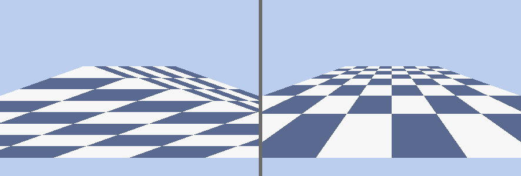
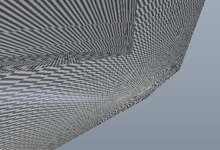
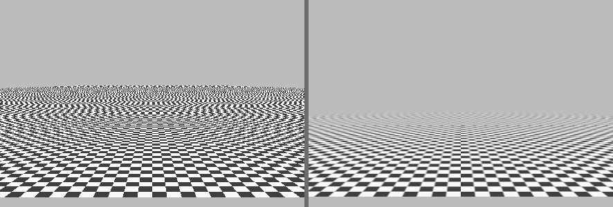

Why this subject matters now
For thirty years real-time graphics meant one algorithm: rasterization. Triangles were projected to the screen, covered pixels were found by scan conversion, and a depth buffer resolved occlusion. Ray tracing lived in film, where a frame could take hours. That division ended around 2018, when GPUs shipped fixed-function units for ray-box and ray-triangle intersection and for traversing bounding-volume hierarchies, so that a game frame can now mix rasterized primary visibility with ray-traced shadows, reflections, and global illumination inside a fixed budget of roughly sixteen milliseconds. A practitioner today is expected to understand both pipelines, to know why one is a streaming memory-coherent workload and the other is a pointer-chasing latency-bound one, and to reason about the tradeoff rather than treat either as a black box.
The second shift is that shading became physically based. The Phong and Blinn-Phong models that dominated until roughly 2012 were convenient curve fits with no energy budget; a surface could reflect more light than it received, and artists tuned constants per light. The microfacet theory that Cook and Torrance imported from optics in 1982, combined with the measured-material databases and the practical reparameterizations that Disney, Epic, and Google Filament published between 2012 and 2018, replaced those knobs with a small number of physically meaningful parameters: base color, metalness, roughness. The same Cook-Torrance BRDF now runs in a mobile fragment shader and in an offline path tracer, which is why a single derivation carries across the whole field.
The third shift is that the output of a renderer is increasingly an input to a learning system, and the reverse: differentiable rasterizers and path tracers backpropagate through the pipeline, and neural scene representations reconstruct geometry and radiance from photographs. Those techniques are treated on the companion pages physically-based-rendering, interactive-graphics, and neural-3d-representations. None of them make sense without the classical pipeline this page derives, because a differentiable renderer is the classical renderer with its transforms and intersection tests made smooth, and a neural radiance field is the rendering equation evaluated by a network. The foundation is the leverage.
The coordinate pipeline and homogeneous coordinates
A renderer moves a point through a sequence of coordinate spaces, each a convenient frame for one job. Vertices are authored in object space, placed into a shared world space by a model transform, expressed relative to the camera in view or eye space, projected into clip space, divided down to normalized device coordinates (NDC), and finally scaled to pixel positions in screen space. The chain is a product of matrices precisely because every step except the final rounding is linear in homogeneous coordinates.
object ──[ M model ]──► world ──[ V view ]──► eye ──[ P projection ]──► clip
│
perspective divide (/w)
▼
NDC ──[ viewport ]──► screen (pixels)
Translation is not a linear map on \(\R^3\): there is no \(3\times 3\) matrix \(A\) with \(Ax = x + t\) for all \(x\), because a linear map fixes the origin. Homogeneous coordinates fix this by embedding \(\R^3\) into \(\R^4\), writing a point as \((x, y, z, 1)\) and a direction as \((x, y, z, 0)\). A translation by \(t\) is then the matrix that adds \(t\) scaled by the fourth coordinate, so it moves points and leaves directions alone:
$$ \begin{bmatrix} 1 & 0 & 0 & t_x \\ 0 & 1 & 0 & t_y \\ 0 & 0 & 1 & t_z \\ 0 & 0 & 0 & 1 \end{bmatrix} \begin{bmatrix} x \\ y \\ z \\ 1 \end{bmatrix} = \begin{bmatrix} x + t_x \\ y + t_y \\ z + t_z \\ 1 \end{bmatrix}, \qquad \begin{bmatrix} 1 & 0 & 0 & t_x \\ 0 & 1 & 0 & t_y \\ 0 & 0 & 1 & t_z \\ 0 & 0 & 0 & 1 \end{bmatrix} \begin{bmatrix} x \\ y \\ z \\ 0 \end{bmatrix} = \begin{bmatrix} x \\ y \\ z \\ 0 \end{bmatrix}. $$The deeper reason homogeneous coordinates are the right language for graphics is that a general \(4\times 4\) matrix, not restricted to a bottom row of \((0,0,0,1)\), represents a projective transformation. The fourth coordinate \(w\) is a free scale: the point \((x, y, z, w)\) and the point \((\lambda x, \lambda y, \lambda z, \lambda w)\) denote the same location in space for any \(\lambda \neq 0\), recovered by dividing through, \((x/w, y/w, z/w)\). Perspective is exactly the operation that writes a nontrivial \(w\) into the fourth coordinate as a function of depth, so that the subsequent divide shrinks distant objects. That divide is the one genuinely nonlinear step in the pipeline, and pushing it to the very end, after clipping, is what lets every earlier transform compose as a plain matrix product.
The model and view matrices
The model matrix \(M\) is any composition of translation, rotation, and scale that places an object in the world; it is an affine map with bottom row \((0,0,0,1)\). A rotation by angle \(\theta\) about the \(z\) axis, which will appear in the worked example, is
$$ R_z(\theta) = \begin{bmatrix} \cos\theta & -\sin\theta & 0 & 0 \\ \sin\theta & \cos\theta & 0 & 0 \\ 0 & 0 & 1 & 0 \\ 0 & 0 & 0 & 1 \end{bmatrix}. $$The view matrix \(V\) expresses world points in the camera's frame. Given a camera at position \(e\) (the eye), a target it looks at, and an up hint, one builds an orthonormal basis: the forward axis \(f\) points from the eye toward the target, the right axis is \(r = f \times \text{up}\) normalized, and the true up is \(u = r \times f\). The convention used here and by OpenGL is that the camera looks down its own negative \(z\) axis, so the view matrix rotates the world into this basis and then translates the eye to the origin,
$$ V = \begin{bmatrix} r_x & r_y & r_z & 0 \\ u_x & u_y & u_z & 0 \\ -f_x & -f_y & -f_z & 0 \\ 0 & 0 & 0 & 1 \end{bmatrix} \begin{bmatrix} 1 & 0 & 0 & -e_x \\ 0 & 1 & 0 & -e_y \\ 0 & 0 & 1 & -e_z \\ 0 & 0 & 0 & 1 \end{bmatrix}. $$When the camera sits on the \(z\) axis at \((0,0,d)\) looking at the origin with up \((0,1,0)\), the basis is the identity rotation, \(r=(1,0,0)\), \(u=(0,1,0)\), \(f=(0,0,-1)\), and \(V\) reduces to a pure translation by \(-d\) along \(z\). This is the case used below, because it keeps the arithmetic transparent while still exercising every stage.
Building the perspective projection matrix from the frustum
The projection matrix is where the geometry lives, so it is derived rather than quoted. The camera sees a truncated pyramid, the view frustum, bounded by a near plane at eye-space depth \(z_e = -n\) and a far plane at \(z_e = -f\), with \(0 < n < f\). On the near plane the visible window spans \(x \in [l, r]\) and \(y \in [b, t]\). The job of projection is to map this frustum onto the cube \([-1,1]^3\) in NDC, and to do it so that the map is a matrix followed by a divide.
Start with the projection of a point onto the near plane by similar triangles. A point \((x_e, y_e, z_e)\) in eye space, with \(z_e < 0\), casts a ray to the eye at the origin; where that ray crosses \(z = -n\) its \(x\) coordinate is scaled by the ratio of depths,
$$ x_{\text{near}} = \frac{-n\, x_e}{z_e} = n \frac{x_e}{-z_e}. $$This is the entire content of perspective: a point twice as far away projects to half the offset. The window \([l, r]\) on the near plane must map affinely to \([-1, 1]\), so the NDC \(x\) coordinate is
$$ x_{\text{ndc}} = \frac{2 x_{\text{near}} - (r + l)}{r - l} = \frac{1}{-z_e}\left( \frac{2n}{r-l}\, x_e + \frac{r+l}{r-l}\, z_e \right). $$The factor \(1/(-z_e)\) is the perspective divide, so if we set the homogeneous \(w = -z_e\), the clip-space \(x\) before the divide is the linear expression in parentheses: \(x_{\text{clip}} = \frac{2n}{r-l} x_e + \frac{r+l}{r-l} z_e\). The \(y\) row is identical with \(t, b\) in place of \(r, l\). The bottom row must produce \(w = -z_e\), which means it is \((0, 0, -1, 0)\). Only the \(z\) row is left, and it is fixed by two requirements: after the divide, \(z_e = -n\) must map to \(z_{\text{ndc}} = -1\) and \(z_e = -f\) to \(z_{\text{ndc}} = +1\). Writing the row as \((0, 0, A, B)\), the divide gives
$$ z_{\text{ndc}} = \frac{A z_e + B}{-z_e} = -A - \frac{B}{z_e}. $$Substituting the two boundary conditions,
$$ -A + \frac{B}{n} = -1, \qquad -A + \frac{B}{f} = 1. $$Subtracting the first from the second, \(B\left(\tfrac{1}{f} - \tfrac{1}{n}\right) = 2\), hence \(B = \dfrac{2}{\frac{n - f}{nf}} = -\dfrac{2fn}{f - n}\). Back-substituting, \(A = \dfrac{B}{n} + 1 = -\dfrac{2f}{f-n} + 1 = -\dfrac{f + n}{f - n}\). The complete projection matrix is therefore
$$ P = \begin{bmatrix} \dfrac{2n}{r-l} & 0 & \dfrac{r+l}{r-l} & 0 \\[6pt] 0 & \dfrac{2n}{t-b} & \dfrac{t+b}{t-b} & 0 \\[6pt] 0 & 0 & -\dfrac{f+n}{f-n} & -\dfrac{2fn}{f-n} \\[6pt] 0 & 0 & -1 & 0 \end{bmatrix}. $$For a symmetric frustum, \(r = -l\) and \(t = -b\), the off-diagonal terms vanish and the matrix is usually parameterized by the vertical field of view \(\theta_{\text{fov}}\) and the aspect ratio \(a = W/H\). Since \(t = n \tan(\theta_{\text{fov}}/2)\) and \(r = a t\), the two nonzero scale terms become
$$ P_{00} = \frac{n}{r} = \frac{1}{a \tan(\theta_{\text{fov}}/2)}, \qquad P_{11} = \frac{n}{t} = \frac{1}{\tan(\theta_{\text{fov}}/2)}. $$The near distance \(n\) has cancelled out of the \(x\) and \(y\) scales, which is why the field of view, not the near plane, controls how wide the camera sees. The near and far planes survive only in the \(z\) row, and that is the source of the depth-precision behavior derived later.

Take a symmetric perspective camera with vertical field of view \(\theta_{\text{fov}} = 60^\circ\), aspect ratio \(a = 1.5\), near plane \(n = 1\), far plane \(f = 50\). The model transform is a rotation of \(90^\circ\) about the \(z\) axis followed by a translation of \((1, 0, 0)\). The camera sits at \((0,0,5)\) looking at the origin with up \((0,1,0)\). Carry the object-space point \(p = (0.5,\, 0.25,\, 0)\) all the way to normalized device coordinates, then to pixel coordinates on a \(1920 \times 1080\) framebuffer.
Solution. First assemble the matrices. The model matrix is the translation times the rotation, \(M = T(1,0,0)\, R_z(90^\circ)\). Since \(\cos 90^\circ = 0\) and \(\sin 90^\circ = 1\), the rotation sends \((x,y) \mapsto (-y, x)\), and after the translation
$$ M = \begin{bmatrix} 0 & -1 & 0 & 1 \\ 1 & 0 & 0 & 0 \\ 0 & 0 & 1 & 0 \\ 0 & 0 & 0 & 1 \end{bmatrix}. $$Applying it to \(p = (0.5, 0.25, 0, 1)\) gives the world point \((0 \cdot 0.5 - 1 \cdot 0.25 + 1,\; 1 \cdot 0.5,\; 0,\; 1) = (0.75,\, 0.5,\, 0,\, 1)\). The view matrix is a translation by \(-5\) along \(z\), so the eye-space point is \((0.75,\, 0.5,\, -5,\, 1)\); it sits five units in front of the camera, well inside the near and far planes.
The projection scales are \(t = \tan(30^\circ) = 0.5774\), \(r = 1.5 t = 0.8660\), so \(P_{00} = n/r = 1.1547\) and \(P_{11} = n/t = 1.7321\). The depth row is \(P_{22} = -(f+n)/(f-n) = -51/49 = -1.0408\) and \(P_{23} = -2fn/(f-n) = -100/49 = -2.0408\). Multiplying \(P\) by the eye-space point:
$$ \text{clip} = \big(1.1547 \cdot 0.75,\;\; 1.7321 \cdot 0.5,\;\; -1.0408 \cdot (-5) - 2.0408,\;\; -(-5)\big) = (0.8660,\; 0.8660,\; 3.1633,\; 5). $$The clip \(w\) is \(5\), equal to \(-z_e\) as designed. The perspective divide yields NDC \((0.1732,\, 0.1732,\, 0.6327)\). All three coordinates lie in \([-1, 1]\), so the point is inside the frustum. Finally the viewport transform maps \(x_{\text{ndc}} \in [-1,1]\) to \([0, W]\) and flips \(y\) because screen rows count downward:
$$ x_s = \frac{x_{\text{ndc}} + 1}{2}\, W = \frac{1.1732}{2}\, 1920 = 1126.3, \qquad y_s = \Big(1 - \frac{y_{\text{ndc}} + 1}{2}\Big) H = 0.4134 \cdot 1080 = 446.5. $$The stored depth is \((z_{\text{ndc}} + 1)/2 = 0.8163\). The point lands at pixel \((1126,\, 447)\) with depth \(0.816\). Every number here is a plain matrix product except the single divide by \(w = 5\); that one division is the whole of perspective.
The viewport transform and clip-space clipping
The viewport transform is the affine map from the NDC cube to pixel coordinates. With a framebuffer of width \(W\) and height \(H\), origin at the top-left and \(y\) increasing downward,
$$ x_s = \frac{x_{\text{ndc}}+1}{2}\,W, \qquad y_s = \frac{1 - y_{\text{ndc}}}{2}\,H, \qquad z_s = \frac{z_{\text{ndc}}+1}{2}. $$Clipping happens in clip space, before the divide, and this ordering is not an accident. A triangle straddling the near plane has a vertex with \(w \le 0\); dividing that vertex would send it to infinity or wrap it to the wrong side of the screen. Clipping against the six frustum planes in homogeneous coordinates, where the near-plane test is simply \(z_{\text{clip}} \ge -w_{\text{clip}}\), avoids the singularity entirely by cutting the geometry before any division occurs. The Sutherland-Hodgman algorithm walks each triangle edge against each plane, keeping inside vertices and inserting intersection vertices where an edge crosses, which can turn a triangle into a polygon that is then re-triangulated.
Rasterization: turning triangles into pixels
Rasterization answers one question per triangle: which pixels does it cover, and what is each covered pixel's interpolated depth and attributes. The modern formulation, due to Pineda in 1988, replaces the older scan-line walking with edge functions, which are trivially parallel and map perfectly onto SIMD hardware.
The edge function
For a directed edge from \(a = (a_x, a_y)\) to \(b = (b_x, b_y)\), define the edge function at a point \(p\) as the signed area cross product
$$ E_{ab}(p) = (b_x - a_x)(p_y - a_y) - (b_y - a_y)(p_x - a_x). $$Geometrically \(E_{ab}(p)\) is twice the signed area of the triangle \(a, b, p\), positive when \(p\) lies to the left of the directed edge and negative to the right (with the \(y\)-down screen convention this sign flips, but consistently). A point is inside a triangle with counter-clockwise vertices \(v_0, v_1, v_2\) exactly when all three edge functions \(E_{v_0 v_1}(p)\), \(E_{v_1 v_2}(p)\), \(E_{v_2 v_0}(p)\) share the same sign. The rasterizer computes the triangle's bounding box, then evaluates the three edge functions at every pixel center; a pixel is covered when the three signs agree. The edge function is affine in \(p\), so within the bounding box it can be updated incrementally by adding a constant when stepping one pixel in \(x\) or \(y\), which is why the inner loop is three additions and three sign tests per pixel.
Barycentric coordinates as area ratios
Barycentric coordinates express a point inside a triangle as a weighted average of its vertices, \(p = \lambda_0 v_0 + \lambda_1 v_1 + \lambda_2 v_2\) with \(\lambda_0 + \lambda_1 + \lambda_2 = 1\). The weights are exactly the normalized edge functions, because each edge function is twice a sub-triangle area. Let \(A\) be the total signed area of the triangle and \(A_i\) the signed area of the sub-triangle opposite vertex \(v_i\) (the one formed by \(p\) and the other two vertices). Then
$$ \lambda_0 = \frac{A_0}{A} = \frac{E_{v_1 v_2}(p)}{E_{v_1 v_2}(v_0)}, \qquad \lambda_1 = \frac{A_1}{A}, \qquad \lambda_2 = \frac{A_2}{A}. $$The proof that these sum to one is that the three sub-triangles tile the whole triangle, \(A_0 + A_1 + A_2 = A\), which holds with signed areas even when \(p\) is outside the triangle (then some \(\lambda_i\) is negative, and that is precisely the inside test). The edge functions the rasterizer already computed are the unnormalized barycentric weights, so interpolation costs nothing beyond a division by \(A\). Any per-vertex attribute, a color, a normal, a texture coordinate, is interpolated as \(\phi(p) = \lambda_0 \phi_0 + \lambda_1 \phi_1 + \lambda_2 \phi_2\), with the caveat about perspective addressed next.
A triangle has screen-space vertices \(v_0 = (0,0)\), \(v_1 = (4,0)\), \(v_2 = (0,3)\). Find the barycentric coordinates of the interior point \(p = (1,1)\) as area ratios, and confirm they reconstruct \(p\).
Solution. The total area is \(A = \tfrac{1}{2}\big[(v_1 - v_0) \times (v_2 - v_0)\big] = \tfrac{1}{2}(4 \cdot 3 - 0 \cdot 0) = 6\). The three sub-triangle areas, using the signed-area cross product, are
$$ A_0 = \operatorname{area}(p, v_1, v_2) = \tfrac{1}{2}\big[(4-1)(3-1) - (0-1)(0-1)\big] = \tfrac{1}{2}(6 - 1) = 2.5, $$ $$ A_1 = \operatorname{area}(v_0, p, v_2) = \tfrac{1}{2}\big[(1)(3) - (1)(0)\big] = 1.5, \qquad A_2 = \operatorname{area}(v_0, v_1, p) = \tfrac{1}{2}\big[(4)(1) - (0)(1)\big] = 2. $$So \(\lambda_0 = 2.5/6 = 0.4167\), \(\lambda_1 = 1.5/6 = 0.25\), \(\lambda_2 = 2/6 = 0.3333\), and they sum to \(1\). Reconstructing: \(\lambda_0 v_0 + \lambda_1 v_1 + \lambda_2 v_2 = 0.4167(0,0) + 0.25(4,0) + 0.3333(0,3) = (1, 1) = p\). The check passes, and note that the sub-triangle opposite \(v_0\) carries the largest weight because \(p\) is nearest \(v_0\); the weight of a vertex grows as the point approaches it.
The top-left fill rule
When two triangles share an edge, a pixel center lying exactly on that shared edge has an edge function of zero and would be filled by both triangles or neither, producing either double-shaded seams (a problem for transparency) or cracks. The top-left fill rule breaks the tie deterministically: a pixel on an edge belongs to the triangle only if that edge is a top edge (horizontal and above the triangle's interior) or a left edge (going downward on the left side). Concretely, when an edge function is exactly zero, the pixel is counted as inside if the edge is top-or-left and outside otherwise. Because the shared edge is a top-or-left edge for exactly one of the two triangles, each boundary pixel is filled once, with no gaps and no overlap. This is a convention, not a derivation, but getting it wrong is a classic source of cracks in a homemade rasterizer.
Perspective-correct interpolation
Linear interpolation of attributes in screen space is wrong under perspective, and the left panel of the figure above shows how wrong. The reason is that the projective map is not affine: equal steps across the screen correspond to unequal steps across the surface, because distant parts of the triangle are compressed. What is linear in screen space is any attribute divided by the clip-space \(w\), together with \(1/w\) itself. The derivation is short. Along a triangle edge parameterized by the true (object-space) interpolant \(s \in [0,1]\), a point in clip space is \((1-s)\, w_0 (\dots) + s\, w_1(\dots)\), and after the divide the screen parameter \(t\) relates to \(s\) by
$$ t = \frac{s / w_1}{(1-s)/w_0 + s/w_1}, \qquad \text{equivalently} \qquad \frac{1}{w(t)} = (1-t)\frac{1}{w_0} + t\frac{1}{w_1}. $$So \(1/w\) interpolates linearly in the screen parameter \(t\). The same algebra applied to an attribute \(\phi\) shows that \(\phi/w\) interpolates linearly as well, and the corrected attribute is recovered by dividing the two interpolants:
$$ \phi(t) = \frac{(1-t)\,\phi_0/w_0 + t\,\phi_1/w_1}{(1-t)/w_0 + t/w_1}. $$In the rasterizer this becomes: interpolate \(1/w\) and each \(\phi/w\) with the plain barycentric weights, then at each pixel divide the attribute interpolant by the \(1/w\) interpolant. The extra cost is one reciprocal per pixel. The naive method omits the divide and interpolates \(\phi\) directly, which is only correct when \(w_0 = w_1\), that is when the triangle is parallel to the screen.
Two vertices of an edge project with clip-space \(w_0 = 2\) (near) and \(w_1 = 10\) (far). A texture coordinate runs from \(u_0 = 0\) to \(u_1 = 1\) along the edge. At the screen midpoint \(t = 0.5\), compute the perspective-correct \(u\) and the naive linearly interpolated \(u\), and report the error.
Solution. Interpolate \(1/w\) at \(t = 0.5\): \(\frac{1}{w} = 0.5 \cdot \tfrac{1}{2} + 0.5 \cdot \tfrac{1}{10} = 0.25 + 0.05 = 0.30\), so the true depth at the midpoint is \(w = 1/0.30 = 3.333\), much nearer than the naive average of \(6\); the screen midpoint corresponds to a surface point well toward the near vertex. Interpolate \(u/w\): \(\frac{u}{w} = 0.5 \cdot \tfrac{0}{2} + 0.5 \cdot \tfrac{1}{10} = 0.05\). Divide:
$$ u_{\text{correct}} = \frac{0.05}{0.30} = 0.1667, \qquad u_{\text{naive}} = 0.5 \cdot 0 + 0.5 \cdot 1 = 0.5. $$The error is \(|0.5 - 0.1667| = 0.333\), a third of the entire texture-coordinate range, at a single pixel. This is exactly the warping in the left panel of the figure: the naive method places the middle of the texture at the middle of the screen, but under perspective the middle of the screen is much closer to the near edge of the surface, so the texture should be only one-sixth of the way through. The larger the ratio \(w_1/w_0\), the more grazing the surface and the worse the naive error.
The depth buffer and why 1/z precision is nonuniform
Occlusion is resolved with a depth buffer: alongside the color buffer, each pixel stores the depth of the nearest fragment seen so far, and a fragment is drawn only if it is closer, after which it overwrites the stored depth. The subtlety is what "depth" means. The value interpolated and stored is not eye-space \(z_e\) but the NDC \(z\), and from the projection derivation \(z_{\text{ndc}} = -A - B/z_e\) is an affine function of \(1/z_e\), not of \(z_e\). Because the depth buffer is quantized uniformly (a 24-bit integer, say), uniform steps in stored depth correspond to uniform steps in \(1/z_e\), which means the eye-space resolution is fine near the camera and coarse far away. Two distant surfaces a centimeter apart can map to the same depth value and flicker against each other frame to frame, the artifact called z-fighting.
With the camera of Problem 1 (\(n = 1\), \(f = 50\)), compute the stored depth \(d = (z_{\text{ndc}} + 1)/2\) for eye-space depths \(z_e = -1, -2, -10, -50\). Then compare the change in stored depth for a \(0.1\)-unit move near the camera (\(z_e: -1 \to -1.1\)) against the same move far away (\(z_e: -49 \to -49.1\)), and state the precision ratio.
Solution. With \(A = (f+n)/(f-n) = 51/49\) and \(B = 2fn/(f-n) = 100/49\), the NDC depth is \(z_{\text{ndc}} = A + B/z_e\) (using \(z_e < 0\)). Evaluating and mapping to \([0,1]\):
| \(z_e\) | \(z_{\text{ndc}}\) | stored \(d\) |
|---|---|---|
| \(-1\) | \(-1.000\) | \(0.000\) |
| \(-2\) | \(0.0204\) | \(0.510\) |
| \(-10\) | \(0.837\) | \(0.918\) |
| \(-50\) | \(1.000\) | \(1.000\) |
Half of the entire depth range, \(0\) to \(0.510\), is spent on the first single unit of distance, from \(z_e = -1\) to \(z_e = -2\), while everything from \(z_e = -10\) to \(z_e = -50\) is squeezed into the last \(0.082\). Now the differential: the near move \(z_e: -1 \to -1.1\) changes \(d\) by \(0.0928\), while the far move \(z_e: -49 \to -49.1\) changes \(d\) by only \(4.24 \times 10^{-5}\). The ratio is \(0.0928 / (4.24 \times 10^{-5}) \approx 2190\): the depth buffer resolves near geometry roughly two thousand times more finely than far geometry of the same physical size. The practical fixes are to push the near plane out as far as the scene tolerates (the effect is dominated by \(n\)), to use a floating-point depth buffer with a reversed mapping so that the exponent's density aligns with the \(1/z\) curve, or a logarithmic depth buffer.
Texture mapping and filtering
A texture is an image indexed by per-vertex \((u, v)\) coordinates in \([0,1]^2\), interpolated across the triangle (perspective-correctly, per the previous section) and sampled at each fragment. The difficulty is not the lookup; it is that the mapping from screen pixels to texels is almost never one-to-one, and both directions of mismatch cause artifacts. When one texel covers many pixels, the texture is magnified and looks blocky under nearest-neighbor sampling; bilinear filtering, a weighted average of the four nearest texels, smooths it. The harder case is minification, when one pixel covers many texels, as on a floor receding to the horizon.

The aliasing problem, stated as sampling
A textured surface is a continuous signal; the pixel grid samples it at a fixed rate. The Nyquist-Shannon theorem says a signal is reconstructed faithfully only if it contains no frequencies above half the sample rate. A checkerboard viewed at a grazing angle contains arbitrarily high spatial frequencies as it recedes, far above the pixel Nyquist limit, so those frequencies fold back down (alias) into spurious low-frequency patterns, the moire in the figure. The correct fix is to remove the frequencies above the Nyquist limit before sampling, that is, to prefilter the texture by averaging over the exact footprint that each pixel projects onto in texture space. Computing that footprint exactly per pixel is too expensive for real time, so the field uses precomputed approximations.
Mipmapping and the mip-level derivation
Mipmapping, introduced by Williams in 1983, precomputes a pyramid of the texture: level 0 is the full-resolution image, level 1 is a \(2\times\) downsampled (and box-filtered) version, level 2 is \(4\times\) down, and so on, each level half the size of the last, at a total storage cost of \(4/3\) the original. At render time the renderer picks the level whose texels are roughly pixel-sized, so that a single filtered lookup already represents an average over the pixel's footprint. The level is chosen from how fast the texture coordinates change across the screen, that is, from the screen-space partial derivatives of \((u, v)\).
Let the texture be \(T \times T\) texels. Over one pixel step in screen \(x\), the texel coordinates change by \(\left(T \frac{\partial u}{\partial x}, T \frac{\partial v}{\partial x}\right)\), and similarly in \(y\). The pixel's footprint in texture space is spanned by these two vectors; a conservative measure of its size is the longer of the two,
$$ \rho = \max\!\left( \sqrt{\Big(T\tfrac{\partial u}{\partial x}\Big)^2 + \Big(T\tfrac{\partial v}{\partial x}\Big)^2},\;\; \sqrt{\Big(T\tfrac{\partial u}{\partial y}\Big)^2 + \Big(T\tfrac{\partial v}{\partial y}\Big)^2} \right). $$If \(\rho\) texels fall under one pixel, the level whose texels are pixel-sized is the one downsampled by a factor \(\rho\), and since level \(\ell\) is downsampled by \(2^\ell\), the mip level is
$$ \lambda = \log_2 \rho. $$The GPU makes the derivatives cheap by shading pixels in \(2\times 2\) quads and taking finite differences of \((u,v)\) across the quad, which is why the derivative operators \(\texttt{dFdx}\), \(\texttt{dFdy}\) exist in shading languages and why they are undefined in non-quad contexts. Because \(\lambda\) is generally fractional, trilinear filtering does a bilinear lookup in each of the two bracketing levels \(\lfloor \lambda \rfloor\) and \(\lceil \lambda \rceil\) and blends them by the fractional part, so that the level transition is continuous rather than a visible seam.
A \(512 \times 512\) texture is sampled at a fragment where the screen-space derivatives of the texture coordinates are \(\partial u/\partial x = 0.01\), \(\partial v/\partial x = 0\), \(\partial u/\partial y = 0\), \(\partial v/\partial y = 0.02\) (in normalized \([0,1]\) units per pixel). Find the mip level and the trilinear blend weight.
Solution. Convert the derivatives to texels by multiplying by \(T = 512\). The \(x\) footprint vector is \((0.01 \cdot 512, 0) = (5.12, 0)\) with length \(5.12\); the \(y\) footprint vector is \((0, 0.02 \cdot 512) = (0, 10.24)\) with length \(10.24\). The footprint measure is \(\rho = \max(5.12, 10.24) = 10.24\). The mip level is \(\lambda = \log_2 10.24 = 3.356\). The renderer samples level \(3\) (a \(64 \times 64\) image) and level \(4\) (a \(32 \times 32\) image), does a bilinear lookup in each, and blends them with weight \(0.356\) toward level \(4\). Sampling the full-resolution level \(0\) here would average nothing and alias badly, because the pixel truly covers a \(10\)-texel-wide region that must be prefiltered.

Anisotropic filtering
A single mip level is isotropic: it assumes the pixel footprint is a square of side \(\rho\). At a grazing angle the footprint is a long thin rectangle, wide across the direction of view and narrow across it, so choosing the level for the long axis blurs the short axis and choosing it for the short axis aliases the long one. Anisotropic filtering takes several trilinear samples spaced along the long axis of the footprint and averages them, using the ratio of the two footprint lengths (capped, typically at \(16\times\)) as the number of samples. It is the single most effective quality setting on ground and road textures, and it costs proportionally more bandwidth, which is why it is a slider rather than always on.
Shading: from Lambert to physically based
Shading computes the color leaving a surface point toward the camera given the incoming light. The progression from Lambert to Blinn-Phong to Cook-Torrance is a progression from convenient to correct, and each step is derivable.
Lambertian diffuse
A perfectly matte surface scatters incoming light equally in all directions. Its apparent brightness is independent of the viewing angle, but it does depend on the angle of the incoming light through the geometry of how much light lands per unit area. A beam of irradiance \(E\) striking a surface at angle \(\theta_i\) from the normal spreads over an area larger by \(1/\cos\theta_i\), so the power per unit surface area scales as \(\cos\theta_i = \mathbf{n}\cdot\mathbf{l}\). This cosine, the Lambert term, is not a material property; it is pure geometry, the foreshortening of the incident beam. The reflected radiance of a Lambertian surface with albedo \(\rho \in [0,1]\) under a light of radiance \(L_i\) is
$$ L_o = \frac{\rho}{\pi}\, L_i\, \max(0,\, \mathbf{n}\cdot\mathbf{l}). $$The factor \(1/\pi\) is the normalization that keeps the surface from reflecting more than it receives: integrating the constant BRDF \(\rho/\pi\) times the cosine over the hemisphere gives exactly \(\rho\), so a white surface (\(\rho = 1\)) reflects all of its incident light and no more. Skipping the \(1/\pi\), as much older code did, is an energy leak of a factor of \(\pi\) that artists silently compensated for by dimming their lights.
Blinn-Phong specular
Phong (1975) added a specular highlight by measuring how closely the reflection of the light direction about the normal aligns with the view direction, raised to a power that controls tightness. Blinn (1977) replaced the reflection vector with the half vector \(\mathbf{h} = (\mathbf{l} + \mathbf{v})/\|\mathbf{l} + \mathbf{v}\|\), the direction that would need to be the surface normal for a perfect mirror to send the light straight to the eye. The Blinn-Phong specular term is
$$ L_{\text{spec}} = k_s\, L_i\, \max(0,\, \mathbf{n}\cdot\mathbf{h})^{\,\alpha}, $$where the exponent \(\alpha\) (the "shininess") narrows the highlight as it grows. The half vector is cheaper and better behaved than Phong's reflection vector, and it happens to be the same half vector that reappears as the microfacet normal in the physically based model, which is not a coincidence: Blinn-Phong is a crude approximation to a microfacet distribution. Its defect is that it has no energy budget, no Fresnel behavior at grazing angles, and its constants have no physical meaning, so a material tuned under one light looks wrong under another.
The rendering equation
The correct statement of what shading approximates is the rendering equation, published by Kajiya in 1986. The radiance leaving a point \(x\) in direction \(\omega_o\) is the emitted radiance plus the integral over the hemisphere of incoming radiance weighted by the BRDF and the cosine term:
$$ L_o(x, \omega_o) = L_e(x, \omega_o) + \int_{\Omega} f_r(x, \omega_i, \omega_o)\, L_i(x, \omega_i)\, (\mathbf{n}\cdot\omega_i)\, d\omega_i. $$Everything in rendering is an approximation to this integral. Direct lighting evaluates it for light sources only; a rasterizer with local shading truncates the incoming radiance to a few analytic lights; a path tracer estimates the full integral, including \(L_i\) that is itself the outgoing radiance of other surfaces, by Monte Carlo sampling. The function \(f_r\), the bidirectional reflectance distribution function, is the material. A physical BRDF must satisfy two constraints: reciprocity, \(f_r(\omega_i, \omega_o) = f_r(\omega_o, \omega_i)\), and energy conservation, that the total reflected fraction over the hemisphere never exceeds one. The microfacet model is the standard construction that satisfies both.
The Cook-Torrance microfacet BRDF
Cook and Torrance (1982), building on Torrance-Sparrow optics, model a rough surface as a dense field of tiny perfect mirrors (microfacets), each a flat specular reflector. A microfacet contributes to the reflection from \(\omega_i\) to \(\omega_o\) only if its normal points along the half vector \(\mathbf{h}\). Three statistical factors then give the specular BRDF:
$$ f_r(\omega_i, \omega_o) = \frac{D(\mathbf{h})\, F(\omega_o, \mathbf{h})\, G(\omega_i, \omega_o)}{4\,(\mathbf{n}\cdot\omega_i)(\mathbf{n}\cdot\omega_o)}. $$The three terms have distinct physical roles. \(D\) is the normal distribution function: what fraction of microfacets are oriented with normal \(\mathbf{h}\), which controls the size and shape of the highlight. \(F\) is the Fresnel reflectance: what fraction of light a microfacet reflects rather than transmits, which rises to one at grazing angles for every material. \(G\) is the geometry or masking-shadowing term: what fraction of microfacets are neither hidden behind others from the light nor from the eye. The \(4\,(\mathbf{n}\cdot\omega_i)(\mathbf{n}\cdot\omega_o)\) denominator is the Jacobian from the microfacet-normal density to the reflected-direction density, and it is what makes the whole expression reciprocal and correctly normalized.
The dominant modern choice for \(D\) is the GGX (Trowbridge-Reitz) distribution, which has a narrower peak and a wider tail than a Gaussian, matching measured materials better,
$$ D_{\text{GGX}}(\mathbf{h}) = \frac{\alpha^2}{\pi\big[(\mathbf{n}\cdot\mathbf{h})^2(\alpha^2 - 1) + 1\big]^2}, \qquad \alpha = r^2, $$where \(r \in [0,1]\) is the artist-facing roughness and \(\alpha = r^2\) is the perceptually linear remapping that Disney popularized. At the peak, when \(\mathbf{n}\cdot\mathbf{h} = 1\), the denominator is \(\pi\alpha^4\) and \(D = 1/(\pi\alpha^2)\); a smaller roughness gives a taller, tighter peak, exactly the behavior of a polished surface. The geometry term is commonly the Smith model, a product of two masking functions, one for the light and one for the view, each using the Schlick-GGX approximation with \(k = (r+1)^2/8\) for direct lighting,
$$ G(\omega_i, \omega_o) = G_1(\omega_i)\,G_1(\omega_o), \qquad G_1(\omega) = \frac{\mathbf{n}\cdot\omega}{(\mathbf{n}\cdot\omega)(1-k) + k}. $$The Fresnel-Schlick approximation, derived
The exact Fresnel equations give the reflectance of a smooth interface as a function of the incidence angle and the indices of refraction, in separate expressions for the two polarizations, and they are too heavy for a shader inner loop. Schlick (1994) observed that the unpolarized Fresnel reflectance, as a function of the cosine of the incidence angle \(\cos\theta = \omega_o \cdot \mathbf{h}\), is well approximated by a quintic that interpolates between the reflectance at normal incidence, \(F_0\), and total reflectance at grazing incidence,
$$ F(\theta) \approx F_0 + (1 - F_0)\,(1 - \cos\theta)^5. $$The construction is a Hermite-style fit: the true Fresnel curve is flat near normal incidence and turns sharply up to \(1\) at \(90^\circ\), and \((1-\cos\theta)^5\) is the lowest-degree monomial that stays near zero across most of the range and then rises steeply, with the exponent \(5\) chosen empirically to match the exact curve for common indices of refraction. The value at normal incidence is itself derived from the index of refraction, \(F_0 = \left(\frac{\eta - 1}{\eta + 1}\right)^2\); for a typical dielectric with \(\eta \approx 1.5\) this gives \(F_0 \approx 0.04\), the reason "\(4\) percent" is the default specular for non-metals. Metals have \(F_0\) near their tinted albedo, which is why the metalness parameter routes the base color into \(F_0\) for metals and into the diffuse term for dielectrics.
Evaluate the Cook-Torrance specular BRDF for a dielectric with roughness \(r = 0.5\) (so \(\alpha = 0.25\)) and \(F_0 = 0.04\), lit so that the light and view are symmetric about the normal at \(45^\circ\) each. That is, with normal \(\mathbf{n} = (0,0,1)\), take \(\mathbf{l} = (-\tfrac{1}{\sqrt2}, 0, \tfrac{1}{\sqrt2})\) and \(\mathbf{v} = (\tfrac{1}{\sqrt2}, 0, \tfrac{1}{\sqrt2})\). Compute \(D\), \(F\), \(G\), and the assembled BRDF value.
Solution. The half vector is \(\mathbf{h} = (\mathbf{l}+\mathbf{v})/\|\cdot\| = (0,0,1) = \mathbf{n}\), so the configuration sits exactly on the specular peak. The needed cosines are \(\mathbf{n}\cdot\mathbf{h} = 1\), \(\mathbf{n}\cdot\mathbf{v} = \mathbf{n}\cdot\mathbf{l} = \cos 45^\circ = 0.7071\), and \(\mathbf{v}\cdot\mathbf{h} = 0.7071\).
Distribution: at the peak \(D = \alpha^2 / (\pi\alpha^4) = 1/(\pi\alpha^2) = 1/(\pi \cdot 0.0625) = 5.093\).
Fresnel: \(F = 0.04 + 0.96\,(1 - 0.7071)^5 = 0.04 + 0.96 \cdot 0.2929^5 = 0.04 + 0.96 \cdot 0.002156 = 0.04207\). At this moderate angle the reflectance is barely above its \(4\) percent normal-incidence value; the grazing rise is still ahead.
Geometry: \(k = (r+1)^2/8 = 1.5^2/8 = 0.28125\), and \(G_1 = \frac{0.7071}{0.7071(1 - 0.28125) + 0.28125} = \frac{0.7071}{0.5082 + 0.28125} = 0.8957\). Both directions are symmetric, so \(G = 0.8957^2 = 0.8022\).
Assemble: \(f_r = \dfrac{D F G}{4\,(\mathbf{n}\cdot\mathbf{v})(\mathbf{n}\cdot\mathbf{l})} = \dfrac{5.093 \cdot 0.04207 \cdot 0.8022}{4 \cdot 0.7071 \cdot 0.7071} = \dfrac{0.17187}{2.0} = 0.08594\). The specular reflectance per steradian is \(0.0859\); multiplied by the light radiance and the cosine term \(\mathbf{n}\cdot\mathbf{l} = 0.7071\) it becomes the specular contribution to the pixel. Halving the roughness to \(r = 0.25\) would roughly quadruple \(D\) at the peak (\(D \propto 1/\alpha^2 = 1/r^4\)) while shrinking the highlight's area, which is the energy-preserving trade a rougher-to-smoother transition must make.
Energy conservation and the diffuse-specular split
A physically based material splits incoming light into a specular lobe (the microfacet term above) and a diffuse lobe (Lambertian scattering of the light that refracted into the surface and re-emerged). Energy conservation ties them together: the fraction of light reflected specularly is the Fresnel term \(F\), so the fraction available to the diffuse term is at most \(1 - F\). A common formulation weights the diffuse albedo by \((1 - F)(1 - \text{metalness})\), which both prevents the sum from exceeding the incident energy and encodes that metals have no diffuse term at all, because metals absorb all refracted light. This coupling is why physically based materials look consistent across lighting: the specular and diffuse responses are drawn from a shared, bounded budget rather than tuned independently.
Ray tracing: intersection, secondary rays, and acceleration
Rasterization asks, for each triangle, which pixels it covers. Ray tracing inverts the question: for each pixel, it casts a ray and asks which triangle it hits. The inversion is what makes shadows, reflections, and refraction natural, because those are all just more rays cast from a hit point, and it is also what makes the memory-access pattern completely different, as discussed at the end.
Ray-sphere intersection
A ray is \(\mathbf{p}(t) = \mathbf{o} + t\mathbf{d}\) for \(t \ge 0\), with \(\mathbf{d}\) typically unit length. A sphere of center \(\mathbf{c}\) and radius \(R\) is \(\|\mathbf{p} - \mathbf{c}\|^2 = R^2\). Substituting the ray and expanding gives a quadratic in \(t\). Writing \(\mathbf{m} = \mathbf{o} - \mathbf{c}\),
$$ \|\mathbf{d}\|^2 t^2 + 2(\mathbf{m}\cdot\mathbf{d})\, t + (\|\mathbf{m}\|^2 - R^2) = 0. $$With unit \(\mathbf{d}\) this is \(t^2 + 2(\mathbf{m}\cdot\mathbf{d}) t + (\|\mathbf{m}\|^2 - R^2) = 0\), whose discriminant \(\Delta = (\mathbf{m}\cdot\mathbf{d})^2 - (\|\mathbf{m}\|^2 - R^2)\) decides everything: negative means the ray misses, zero means it grazes, positive gives two roots \(t = -(\mathbf{m}\cdot\mathbf{d}) \pm \sqrt{\Delta}\), of which the smaller positive one is the visible front-facing hit. The surface normal at the hit is \((\mathbf{p} - \mathbf{c})/R\). Spheres are the canonical primitive because the algebra is this clean, but real scenes are triangles.
Moller-Trumbore ray-triangle intersection, derived
The Moller-Trumbore algorithm (1997) finds the ray-triangle intersection and the barycentric coordinates of the hit in one shot, without precomputing the triangle's plane. It writes a point on the triangle in barycentric form and sets it equal to a point on the ray. With vertices \(\mathbf{v}_0, \mathbf{v}_1, \mathbf{v}_2\) and edges \(\mathbf{e}_1 = \mathbf{v}_1 - \mathbf{v}_0\), \(\mathbf{e}_2 = \mathbf{v}_2 - \mathbf{v}_0\), a surface point is \(\mathbf{v}_0 + u\mathbf{e}_1 + v\mathbf{e}_2\) with \(u, v \ge 0\) and \(u + v \le 1\). Setting this equal to the ray:
$$ \mathbf{o} + t\mathbf{d} = \mathbf{v}_0 + u\,\mathbf{e}_1 + v\,\mathbf{e}_2 \quad\Longrightarrow\quad \big[\,-\mathbf{d}\;\;\; \mathbf{e}_1\;\;\; \mathbf{e}_2\,\big] \begin{bmatrix} t \\ u \\ v \end{bmatrix} = \mathbf{o} - \mathbf{v}_0. $$This is a \(3\times 3\) linear system, solved by Cramer's rule. Let \(\mathbf{T} = \mathbf{o} - \mathbf{v}_0\). Cramer's rule expresses each unknown as a ratio of determinants, and a determinant of three columns is a scalar triple product \(\det[\mathbf{a}\,\mathbf{b}\,\mathbf{c}] = (\mathbf{a}\times\mathbf{b})\cdot\mathbf{c}\). Defining \(\mathbf{P} = \mathbf{d}\times\mathbf{e}_2\) and \(\mathbf{Q} = \mathbf{T}\times\mathbf{e}_1\), and using the cyclic property of the triple product to reuse them, the solution collapses to
$$ \det = \mathbf{e}_1\cdot\mathbf{P}, \qquad u = \frac{\mathbf{T}\cdot\mathbf{P}}{\det}, \qquad v = \frac{\mathbf{d}\cdot\mathbf{Q}}{\det}, \qquad t = \frac{\mathbf{e}_2\cdot\mathbf{Q}}{\det}. $$The algorithm rejects the triangle early if \(\det\) is near zero (ray parallel to the triangle), if \(u < 0\) or \(u > 1\), if \(v < 0\) or \(u + v > 1\), or if \(t < 0\) (behind the ray). Only surviving rays compute the full hit. Sharing the two cross products \(\mathbf{P}\) and \(\mathbf{Q}\) across the four dot products is the trick that makes it the fastest branch-friendly ray-triangle test in wide use, and it is what the hardware ray-triangle units effectively bake into silicon.
Cast the ray with origin \(\mathbf{o} = (0.5, 0.5, 0)\) and direction \(\mathbf{d} = (0, 0, -1)\) at the triangle \(\mathbf{v}_0 = (0,0,-3)\), \(\mathbf{v}_1 = (2,0,-4)\), \(\mathbf{v}_2 = (0,2,-4)\). Run Moller-Trumbore by hand: find \(t\), \(u\), \(v\), and the hit point.
Solution. Edges: \(\mathbf{e}_1 = \mathbf{v}_1 - \mathbf{v}_0 = (2, 0, -1)\), \(\mathbf{e}_2 = \mathbf{v}_2 - \mathbf{v}_0 = (0, 2, -1)\). The first cross product,
$$ \mathbf{P} = \mathbf{d}\times\mathbf{e}_2 = (0,0,-1)\times(0,2,-1) = (0\cdot(-1) - (-1)\cdot 2,\;\; (-1)\cdot 0 - 0\cdot(-1),\;\; 0\cdot 2 - 0\cdot 0) = (2, 0, 0). $$Determinant: \(\det = \mathbf{e}_1\cdot\mathbf{P} = (2,0,-1)\cdot(2,0,0) = 4\), which is comfortably nonzero, so the ray is not parallel. Now \(\mathbf{T} = \mathbf{o} - \mathbf{v}_0 = (0.5, 0.5, 3)\), and \(u = (\mathbf{T}\cdot\mathbf{P})/\det = (0.5\cdot 2)/4 = 1/4 = 0.25\), which lies in \([0,1]\). The second cross product,
$$ \mathbf{Q} = \mathbf{T}\times\mathbf{e}_1 = (0.5, 0.5, 3)\times(2, 0, -1) = (0.5\cdot(-1) - 3\cdot 0,\;\; 3\cdot 2 - 0.5\cdot(-1),\;\; 0.5\cdot 0 - 0.5\cdot 2) = (-0.5, 6.5, -1). $$Then \(v = (\mathbf{d}\cdot\mathbf{Q})/\det = ((-1)(-1))/4 = 0.25\), and \(u + v = 0.5 \le 1\), so the hit is inside the triangle. Finally \(t = (\mathbf{e}_2\cdot\mathbf{Q})/\det = (0\cdot(-0.5) + 2\cdot 6.5 + (-1)(-1))/4 = 14/4 = 3.5\), which is positive, so the hit is in front of the ray. The hit point is \(\mathbf{o} + t\mathbf{d} = (0.5, 0.5, 0) + 3.5(0,0,-1) = (0.5, 0.5, -3.5)\), and the barycentric reconstruction \(\mathbf{v}_0 + u\mathbf{e}_1 + v\mathbf{e}_2 = (0,0,-3) + 0.25(2,0,-1) + 0.25(0,2,-1) = (0.5, 0.5, -3.5)\) agrees exactly. Every rejection test passed, so the ray hits at depth \(t = 3.5\) with barycentrics \((1 - u - v, u, v) = (0.5, 0.25, 0.25)\).
Shadow, reflection, and refraction rays
Once a primary ray finds the nearest hit, shading spawns secondary rays. A shadow ray goes from the hit point toward each light; if it hits anything before reaching the light, the point is in shadow, so shadow rays need only an any-hit test, not the nearest hit, which is cheaper. A reflection ray mirrors the incoming direction about the surface normal, \(\mathbf{r} = \mathbf{d} - 2(\mathbf{d}\cdot\mathbf{n})\mathbf{n}\), and its returned color feeds the specular term; recursing on it is Whitted's 1980 recursive ray tracing. A refraction ray bends according to Snell's law, \(\eta_1 \sin\theta_1 = \eta_2 \sin\theta_2\), with total internal reflection when the radicand of the transmitted direction goes negative. To avoid a secondary ray immediately re-hitting the surface it started from due to floating-point error (shadow acne), the origin is nudged along the normal by a small epsilon. The recursion is bounded by a maximum depth, because a hall of mirrors would otherwise never terminate.
Bounding-volume hierarchies and the surface-area heuristic
Testing every ray against every triangle is \(O(NR)\) and hopeless at scale. The standard acceleration structure is a bounding-volume hierarchy (BVH): a binary tree of axis-aligned bounding boxes, where each node's box contains its children's boxes, and leaves hold a few triangles. A ray descends the tree, testing the cheap box intersection at each node and recursing only into boxes it hits, so most of the scene is culled without touching a triangle. The quality of the tree, how few boxes and triangles a ray must test on average, is set by how the triangles are partitioned at each node, and the standard criterion is the surface-area heuristic (SAH), from Goldsmith and Salmon and refined by MacDonald and Booth (1990).
The SAH estimates the expected cost of a subtree from a probabilistic model. For a ray known to hit a node's box, the conditional probability that it also hits a convex child box is the ratio of their surface areas, \(P(\text{hit child} \mid \text{hit parent}) = A_{\text{child}}/A_{\text{parent}}\), a classic result from integral geometry (the measure of lines hitting a convex body is proportional to its surface area). The expected cost of splitting the node's primitives into a left set of \(N_L\) and a right set of \(N_R\) is therefore the traversal cost plus the expected cost of testing whichever side the ray enters,
$$ C_{\text{split}} = C_{\text{trav}} + \frac{A_L}{A}\,N_L\,C_{\text{isect}} + \frac{A_R}{A}\,N_R\,C_{\text{isect}}, $$compared against the cost of making the node a leaf, \(C_{\text{leaf}} = N\,C_{\text{isect}}\). The builder evaluates this cost over many candidate split planes, typically by sorting or binning primitive centroids along each axis, and picks the split that minimizes it; if no split beats the leaf cost, it stops. The surface area of an axis-aligned box with dimensions \((d_x, d_y, d_z)\) is \(2(d_x d_y + d_y d_z + d_z d_x)\). The heuristic's power is that it prefers splits that put few primitives in small (low-surface-area, rarely-hit) boxes, which is what makes empty space cheap to traverse.
A BVH node bounds a box of dimensions \(4 \times 2 \times 2\) containing \(12\) primitives. Two candidate splits along the long axis are considered. Split A cuts at the midpoint, giving two \(2\times 2\times 2\) boxes with \(6\) primitives each. Split B cuts at one quarter, giving a \(1\times 2\times 2\) box with \(3\) primitives and a \(3\times 2\times 2\) box with \(9\). Using \(C_{\text{trav}} = 1\) and \(C_{\text{isect}} = 1\), compute each split's SAH cost, compare to making a leaf, and pick the winner.
Solution. Parent surface area: \(A = 2(4\cdot 2 + 2\cdot 2 + 2\cdot 4) = 2(8 + 4 + 8) = 40\).
Split A: each child box has area \(2(2\cdot 2 + 2\cdot 2 + 2\cdot 2) = 24\). The cost is \(C_A = 1 + \tfrac{24}{40}\cdot 6 + \tfrac{24}{40}\cdot 6 = 1 + 3.6 + 3.6 = 8.2\).
Split B: left area \(2(1\cdot 2 + 2\cdot 2 + 2\cdot 1) = 2(2 + 4 + 2) = 16\), right area \(2(3\cdot 2 + 2\cdot 2 + 2\cdot 3) = 2(6 + 4 + 6) = 32\). The cost is \(C_B = 1 + \tfrac{16}{40}\cdot 3 + \tfrac{32}{40}\cdot 9 = 1 + 1.2 + 7.2 = 9.4\).
Leaf cost: \(C_{\text{leaf}} = 12 \cdot 1 = 12\). Both splits beat the leaf, and split A at \(8.2\) beats split B at \(9.4\). The balanced midpoint split wins here because the primitives are evenly distributed, so equalizing both the areas and the counts minimizes the expected work; split B saved area on the left but paid for it with nine primitives behind a large right box that a ray is \(80\) percent likely to enter. A real builder would test dozens of such candidates per axis and take the global minimum.
Why rasterization versus ray tracing is a memory-access tradeoff
The two pipelines compute the same visibility, but their memory behavior is opposite, and that is the real reason both exist. Rasterization streams: it visits triangles in order, and for each one touches a compact rectangle of the framebuffer and depth buffer, so its memory accesses are coherent, predictable, and prefetchable, saturating bandwidth at high efficiency. It is embarrassingly parallel over pixels within a triangle, which is exactly the shape GPUs were built for. Its weakness is that every effect requiring information from elsewhere in the scene, shadows, reflections, ambient occlusion, has to be faked with an extra screen-space or precomputed pass, because a rasterized fragment only knows about its own triangle.
Ray tracing chases pointers. Following a ray down a BVH is a sequence of dependent memory loads, each node determining which node to fetch next, and neighboring rays quickly diverge to different parts of the tree, so the accesses are incoherent and latency-bound rather than bandwidth-bound. This is why ray tracing was slow on general GPU cores: the hardware is built to hide latency with parallelism, but divergent traversal defeats the coherence that parallelism relies on. The fixed-function ray-tracing cores that shipped from 2018 onward attack exactly this, with dedicated box and triangle intersection units and hardware that reorders and regroups rays to restore coherence. The honest summary is that rasterization is the right tool for coherent primary visibility and ray tracing for the incoherent secondary effects, and modern engines use each where its memory pattern wins.
The modern GPU pipeline and where ray-tracing cores fit
The programmable rasterization pipeline is a fixed sequence of stages, some programmable and some fixed-function. Vertices enter the vertex shader, which applies the MVP transform and any skinning; an optional geometry or mesh shader stage can amplify or cull primitives; the fixed-function rasterizer performs the edge-function coverage and barycentric setup derived above; the fragment (pixel) shader runs per covered pixel, evaluating the Cook-Torrance BRDF and sampling textures with the mip level from its screen-space derivatives; and fixed-function output merging does the depth test and blending.
vertices ─► [vertex shader] ─► [primitive assembly / cull] ─► [RASTERIZER] ─► fragments
(MVP, skinning) (mesh/geometry, optional) (edge fns, barycentrics) │
▼
framebuffer ◄─ [output merge] ◄─ [fragment shader] ◄────┘
(depth test, blend) (Cook-Torrance, texture, mip)
ray tracing: [ray generation] ─► [traverse BVH: box + triangle intersect] ─► [hit / miss / any-hit shaders]
software FIXED-FUNCTION RT CORES software, may recurse
The ray-tracing cores sit alongside this pipeline, not inside it. A ray-generation shader (which can run per pixel, seeded by the rasterized primary hit) launches rays; the RT cores traverse the BVH and run the intersection tests in fixed-function hardware; and programmable hit, miss, and any-hit shaders run at the results, potentially recursing by launching more rays. This is why the modern architecture is called hybrid: the same frame rasterizes primary visibility for coherence and speed, then fires ray-traced secondary rays for the effects that rasterization cannot express, with the two sharing the same shader cores and memory.
Implementation
The first block is the transform pipeline of Problem 1 and the depth-precision table of Problem 4, in plain NumPy, with a vectorized JAX version that transforms a whole array of vertices at once as a rasterizer would. Running it reproduces every number in those problems.
import numpy as np
def perspective(fovy_deg, aspect, n, f):
# OpenGL-style perspective: maps the frustum to the NDC cube [-1,1]^3.
t = n * np.tan(np.radians(fovy_deg) / 2.0)
r = t * aspect
P = np.zeros((4, 4))
P[0, 0] = n / r # = 1 / (aspect * tan(fovy/2))
P[1, 1] = n / t # = 1 / tan(fovy/2)
P[2, 2] = -(f + n) / (f - n)
P[2, 3] = -2.0 * f * n / (f - n)
P[3, 2] = -1.0
return P
def translate(tx, ty, tz):
T = np.eye(4); T[:3, 3] = [tx, ty, tz]; return T
def rot_z(deg):
c, s = np.cos(np.radians(deg)), np.sin(np.radians(deg))
return np.array([[c, -s, 0, 0], [s, c, 0, 0], [0, 0, 1, 0], [0, 0, 0, 1.0]])
# Problem 1: object point through the full MVP chain.
M = translate(1, 0, 0) @ rot_z(90) # model: rotate then translate
V = translate(0, 0, -5) # camera at (0,0,5) looking down -z
P = perspective(60, 1.5, 1.0, 50.0)
p_obj = np.array([0.5, 0.25, 0.0, 1.0])
clip = P @ V @ M @ p_obj # (4,) homogeneous clip coordinates
ndc = clip[:3] / clip[3] # the perspective divide by w
print("clip =", np.round(clip, 4)) # [0.866 0.866 3.1633 5. ]
print("ndc =", np.round(ndc, 4)) # [0.1732 0.1732 0.6327]
W, H = 1920, 1080
xs = (ndc[0] + 1) / 2 * W
ys = (1 - (ndc[1] + 1) / 2) * H # flip y for top-left origin
print("pixel =", round(xs, 1), round(ys, 1)) # 1126.3 446.5
# Problem 4: 1/z depth precision is nonuniform.
n, f = 1.0, 50.0
def stored_depth(ze): # ze < 0 in eye space
z_ndc = -(-(f + n) / (f - n) * ze + -2 * f * n / (f - n)) / (-ze)
return (z_ndc + 1) / 2
near = stored_depth(-1.1) - stored_depth(-1.0)
far = stored_depth(-49.1) - stored_depth(-49.0)
print("near band dz =", round(near, 5)) # 0.09276
print("far band dz =", format(far, ".2e")) # 4.24e-05
print("precision ratio =", round(near / far)) # 2190
import jax, jax.numpy as jnp
def perspective(fovy_deg, aspect, n, f):
t = n * jnp.tan(jnp.radians(fovy_deg) / 2.0)
r = t * aspect
return jnp.array([
[n / r, 0.0, 0.0, 0.0],
[0.0, n / t, 0.0, 0.0],
[0.0, 0.0, -(f + n) / (f - n), -2 * f * n / (f - n)],
[0.0, 0.0, -1.0, 0.0]])
def rot_z(deg):
c, s = jnp.cos(jnp.radians(deg)), jnp.sin(jnp.radians(deg))
return jnp.array([[c, -s, 0, 0], [s, c, 0, 0], [0, 0, 1, 0], [0, 0, 0, 1.0]])
def translate(tx, ty, tz):
return jnp.eye(4).at[:3, 3].set(jnp.array([tx, ty, tz]))
@jax.jit
def project(verts, mvp):
# verts: (N, 3) object-space points -> (N, 3) NDC. This is the whole of
# vertex processing: one matmul, one divide, done for every vertex at once.
h = jnp.concatenate([verts, jnp.ones((verts.shape[0], 1))], axis=1) # (N,4)
clip = h @ mvp.T # (N,4)
return clip[:, :3] / clip[:, 3:4] # divide by w
M = translate(1, 0, 0) @ rot_z(90)
V = translate(0, 0, -5)
P = perspective(60, 1.5, 1.0, 50.0)
mvp = P @ V @ M
verts = jnp.array([[0.5, 0.25, 0.0]])
print("ndc =", jnp.round(project(verts, mvp), 4)) # [[0.1732 0.1732 0.6327]]
The second block implements Moller-Trumbore (Problem 7) and the Cook-Torrance BRDF (Problem 6) in NumPy, and a JAX version that intersects a whole batch of rays against one triangle at once, the core of a vectorized ray caster. Both reproduce the worked numbers.
import numpy as np
def moller_trumbore(o, d, v0, v1, v2, eps=1e-8):
e1, e2 = v1 - v0, v2 - v0
P = np.cross(d, e2)
det = e1 @ P
if abs(det) < eps: # ray parallel to triangle
return None
inv = 1.0 / det
T = o - v0
u = (T @ P) * inv
if u < 0 or u > 1:
return None
Q = np.cross(T, e1)
v = (d @ Q) * inv
if v < 0 or u + v > 1:
return None
t = (e2 @ Q) * inv
return None if t < 0 else (t, u, v)
hit = moller_trumbore(
np.array([0.5, 0.5, 0.0]), np.array([0.0, 0.0, -1.0]),
np.array([0.0, 0.0, -3.0]), np.array([2.0, 0.0, -4.0]),
np.array([0.0, 2.0, -4.0]))
print("t,u,v =", hit) # (3.5, 0.25, 0.25)
def cook_torrance(N, L, V, roughness, F0):
H = (L + V); H /= np.linalg.norm(H)
NdH = max(N @ H, 0.0); NdV = max(N @ V, 0.0)
NdL = max(N @ L, 0.0); VdH = max(V @ H, 0.0)
a = roughness * roughness
D = a * a / (np.pi * (NdH * NdH * (a * a - 1) + 1) ** 2)
F = F0 + (1 - F0) * (1 - VdH) ** 5
k = (roughness + 1) ** 2 / 8
g = lambda x: x / (x * (1 - k) + k)
G = g(NdV) * g(NdL)
return D, F, G, D * F * G / (4 * NdV * NdL)
s2 = 1 / np.sqrt(2)
print(cook_torrance(np.array([0, 0, 1.0]),
np.array([-s2, 0, s2]), np.array([s2, 0, s2]),
0.5, 0.04))
# D=5.093, F=0.04207, G=0.8022, f_r=0.08594
import jax, jax.numpy as jnp
@jax.jit
def intersect_batch(origins, dirs, v0, v1, v2, eps=1e-8):
# origins, dirs: (N, 3). One triangle, many rays -- the inner loop of a
# ray caster, done branchlessly with masks instead of early returns.
e1, e2 = v1 - v0, v2 - v0
P = jnp.cross(dirs, e2) # (N, 3)
det = P @ e1 # (N,)
inv = 1.0 / jnp.where(jnp.abs(det) < eps, 1.0, det)
T = origins - v0 # (N, 3)
u = jnp.sum(T * P, axis=1) * inv
Q = jnp.cross(T, e1) # (N, 3)
v = jnp.sum(dirs * Q, axis=1) * inv
t = jnp.sum(Q * e2, axis=1) * inv
ok = (jnp.abs(det) > eps) & (u >= 0) & (v >= 0) & (u + v <= 1) & (t > 0)
return jnp.where(ok, t, jnp.inf), u, v # inf = miss, for a min-reduce
o = jnp.array([[0.5, 0.5, 0.0]])
d = jnp.array([[0.0, 0.0, -1.0]])
t, u, v = intersect_batch(o, d, jnp.array([0., 0., -3.]),
jnp.array([2., 0., -4.]), jnp.array([0., 2., -4.]))
print("t,u,v =", float(t[0]), float(u[0]), float(v[0])) # 3.5 0.25 0.25
The third block is a real Cook-Torrance fragment shader in GLSL, the kind that runs per pixel in a physically based renderer. It is the same math as the NumPy function, assembled with the diffuse-specular energy split, and written against a single point light for clarity.
#version 330 core
// Cook-Torrance / GGX physically based fragment shader (single point light).
in vec3 vWorldPos;
in vec3 vNormal;
out vec4 fragColor;
uniform vec3 uCamPos;
uniform vec3 uLightPos;
uniform vec3 uLightColor; // radiance
uniform vec3 uAlbedo; // base color
uniform float uMetalness; // 0 dielectric, 1 metal
uniform float uRoughness; // perceptual roughness in [0,1]
const float PI = 3.14159265359;
// GGX (Trowbridge-Reitz) normal distribution.
float D_GGX(float NdH, float rough) {
float a = rough * rough;
float a2 = a * a;
float d = NdH * NdH * (a2 - 1.0) + 1.0;
return a2 / (PI * d * d);
}
// Smith geometry with Schlick-GGX, direct-lighting remap k = (r+1)^2 / 8.
float G_SchlickGGX(float NdX, float rough) {
float k = (rough + 1.0) * (rough + 1.0) / 8.0;
return NdX / (NdX * (1.0 - k) + k);
}
float G_Smith(float NdV, float NdL, float rough) {
return G_SchlickGGX(NdV, rough) * G_SchlickGGX(NdL, rough);
}
// Fresnel-Schlick: interpolate reflectance from F0 to 1 at grazing angle.
vec3 fresnelSchlick(float cosTheta, vec3 F0) {
return F0 + (1.0 - F0) * pow(1.0 - cosTheta, 5.0);
}
void main() {
vec3 N = normalize(vNormal);
vec3 V = normalize(uCamPos - vWorldPos);
vec3 L = normalize(uLightPos - vWorldPos);
vec3 H = normalize(V + L);
float NdV = max(dot(N, V), 1e-4);
float NdL = max(dot(N, L), 0.0);
float NdH = max(dot(N, H), 0.0);
float VdH = max(dot(V, H), 0.0);
// Metals take their F0 from albedo; dielectrics use 4% reflectance.
vec3 F0 = mix(vec3(0.04), uAlbedo, uMetalness);
float D = D_GGX(NdH, uRoughness);
float G = G_Smith(NdV, NdL, uRoughness);
vec3 F = fresnelSchlick(VdH, F0);
vec3 specular = (D * G) * F / max(4.0 * NdV * NdL, 1e-4);
// Energy split: light not reflected specularly is available to diffuse,
// and metals have no diffuse response at all.
vec3 kd = (vec3(1.0) - F) * (1.0 - uMetalness);
vec3 diffuse = kd * uAlbedo / PI;
vec3 radiance = uLightColor; // point light, no attenuation for clarity
vec3 color = (diffuse + specular) * radiance * NdL;
color = color / (color + vec3(1.0)); // Reinhard tone map
color = pow(color, vec3(1.0 / 2.2)); // gamma to sRGB
fragColor = vec4(color, 1.0);
}
How it is done in practice
A production renderer differs from these derivations mostly in the engineering around them. Vertices are not transformed one at a time; a vertex shader processes thousands in parallel, and the MVP matrix is precomputed on the CPU and uploaded once per object, because a matrix multiply per vertex per frame is wasted work when the matrix is constant across the draw. The rasterizer is fixed-function silicon that evaluates edge functions over \(2\times 2\) pixel quads at a time, both to compute the screen-space derivatives that drive mip selection and because SIMD lanes want groups of four. Depth testing is done early, before the fragment shader when possible (early-Z), to skip shading pixels that are already occluded, which is why sorting front-to-back or using a depth prepass is a standard optimization.
Textures are stored not in row-major order but in tiled or swizzled layouts (Morton order and its relatives) so that the four texels a bilinear lookup needs are adjacent in memory and share a cache line, and mip levels are packed so that a trilinear lookup's two levels are near each other. This is a memory-bandwidth optimization of exactly the kind that dominates GPU performance: the arithmetic of a bilinear filter is four multiply-adds, but the four texel fetches are the cost, and the layout is chosen to make them cheap. On the hardware in this repository, an NVIDIA H100 80GB HBM3, the gap between arithmetic and memory is stark: the measured HBM bandwidth is roughly \(3.35\) TB/s while the device sustains on the order of tens of TFLOP/s of fused multiply-add, so a shader that is not reusing data from cache is bandwidth-bound, and this ratio is the single most important number in GPU performance reasoning.
Ray tracing in practice splits the BVH into two levels: a bottom-level acceleration structure per mesh, built once, and a top-level structure over instance transforms, rebuilt per frame as objects move. This lets a scene with thousands of instances of the same mesh share one built tree, refitting only the cheap top level each frame. Builders trade build time against traversal quality: the full sweep SAH gives the best trees but is slow to build, so real-time builders use binned SAH (bucketing centroids into a few dozen bins per axis and evaluating the cost only at bin boundaries), and rebuild or refit strategies are chosen per object based on how much its geometry deforms.
The current research frontier
The most active direction is the fusion of the classical pipeline with learned representations, covered in depth on neural-3d-representations. Neural radiance fields (Mildenhall and colleagues at Berkeley, 2020) reconstruct a scene as a network mapping position and view direction to color and density, rendered by evaluating the volume rendering integral, a special case of the rendering equation, along each ray. The 2023 shift to 3D Gaussian splatting (Kerbl, Kopanas, Leimkuehler, and Drettakis at Inria) replaced the network with an explicit set of anisotropic Gaussians rasterized with a sorted alpha blend, trading the network's compactness for real-time rendering, and it has largely displaced NeRFs for interactive reconstruction because it maps back onto the coherent rasterization memory pattern this page emphasized.
A second frontier is real-time global illumination without dense ray budgets. NVIDIA's ReSTIR line (Bitterli and colleagues, 2020 onward) uses spatiotemporal resampling of light samples to get many-light and path-traced quality from a handful of rays per pixel, and neural denoisers reconstruct a clean image from one or two noisy samples per pixel, which is what makes path-traced games viable inside a frame budget. A third is differentiable rendering: making the rasterizer or path tracer differentiable so that gradients flow from a rendered image back to geometry, materials, or camera, with the reparameterization of discontinuous visibility edges (work from MIT, the Mitsuba 3 system from EPFL, and the soft-rasterizer line) being the hard technical core. These are the subject of physically-based-rendering and interactive-graphics. Across all three, the classical transforms, intersection tests, and the microfacet BRDF remain the primitives; what changes is that they are now differentiable, learned, or resampled rather than merely evaluated.
Open source to read
- mmp/pbrt-v4: the reference physically based renderer
accompanying the Pharr-Jakob-Humphreys book. Start with
src/pbrt/shapes/triangle.cppfor a production Moller-Trumbore, andsrc/pbrt/bxdfs.cppfor the microfacet BRDFs derived here, written to be read alongside the text. - ssloy/tinyrenderer: a software rasterizer built up in a few hundred lines with no dependencies. The best way to see the edge-function loop, barycentric interpolation, and perspective correction as plain code; read the lessons in order.
- google/filament: a production real-time PBR engine with
unusually clear material documentation. The
shaders/directory and the accompanying material guide are the clearest published account of a shippable Cook-Torrance implementation and its energy split. - embree/embree: Intel's high-performance CPU ray tracing kernels. Read it for the binned-SAH BVH builders and the SIMD packet traversal that the acceleration section only sketched.
- NVIDIAGameWorks/Falcor: a real-time research rendering framework built around the hardware ray-tracing API, good for seeing how ray-generation, hit, and miss shaders wire together with rasterization in a hybrid frame.
- nvpro-samples/vk_raytracing_tutorial_KHR: a step-by-step Vulkan ray-tracing tutorial that shows the two-level acceleration structure, shader binding tables, and the exact place the fixed-function cores are invoked.
- TheRealMJP/BakingLab: a focused sample whose accompanying articles are the standard reference for correct exposure, tone mapping, and the subtleties of physically based lighting units that the shader block glossed over.
Common misconceptions
"The perspective divide is part of the projection matrix." It is not. The projection matrix is a linear map that writes \(w = -z_e\) into the fourth coordinate; the divide by \(w\) is a separate, nonlinear step that the hardware performs after clipping. Keeping them separate is what lets clipping happen safely in homogeneous space before any division, and it is why a vertex behind the camera has \(w \le 0\) rather than being undefined.
"Linear interpolation of texture coordinates across a triangle is fine." Only when the triangle is parallel to the screen. Under perspective, the correct interpolant is attribute-over-\(w\) divided by one-over-\(w\); Problem 3 showed the naive method off by a third of the texture range at a single pixel. The warped left panel of the first figure is this error made visible.
"The depth buffer stores linear eye-space depth." It stores NDC \(z\), which is affine in \(1/z_e\), not in \(z_e\). Problem 4 showed that half the buffer's precision covers the first unit of distance, and that near geometry is resolved roughly two thousand times more finely than far geometry the same size, which is the entire cause of z-fighting and the reason reversed-Z depth buffers exist.
"More mip levels make textures blurrier, so turn them off for sharpness." Mipmapping does not blur correctly-sampled textures; it prevents the aliasing that undersampling causes, shown in the second figure. Disabling it does not sharpen, it makes distant textures shimmer and crawl. The over-blur people notice is the isotropic pyramid's fault at grazing angles, and the fix is anisotropic filtering, not fewer levels.
"Blinn-Phong and Cook-Torrance are just different specular formulas." They differ in kind, not degree. Blinn-Phong has no energy budget and no Fresnel term, so its constants have no physical meaning and a material must be retuned per light; Cook-Torrance is derived from microfacet optics, conserves energy through the \(1-F\) diffuse split, and produces the grazing-angle rim that Blinn-Phong cannot. The half vector they share is a hint that the former is a crude approximation to the latter.
"Ray tracing is slow because intersection math is expensive." The arithmetic is cheap; Moller-Trumbore is a few dozen flops. What was expensive is the incoherent, pointer-chasing memory access of BVH traversal, where neighboring rays diverge and defeat the coherence GPUs rely on. That is why the hardware fix was fixed-function traversal and ray reordering, not faster arithmetic, and why the rasterization-versus-ray-tracing choice is fundamentally about memory-access patterns.
"The surface-area heuristic minimizes tree depth or balances the primitive counts." It minimizes expected traversal cost under a probabilistic model where a ray hits a box with probability proportional to its surface area. Problem 8's balanced split won not because it was balanced but because the balanced areas-and-counts happened to minimize the cost; a good SAH tree is frequently unbalanced, putting few primitives behind small boxes so that empty space is cheap to skip.
Self-check
References
- Marschner, S. and Shirley, P. Fundamentals of Computer Graphics, 4th ed. CRC Press, 2015. The standard modern textbook; the transform, rasterization, and ray-tracing chapters underlie this page.
- Akenine-Moller, T., Haines, E., Hoffman, N., et al. Real-Time Rendering, 4th ed. CRC Press, 2018. The reference for the real-time pipeline, physically based shading, and acceleration structures. realtimerendering.com
- Pharr, M., Jakob, W., and Humphreys, G. Physically Based Rendering: From Theory to Implementation, 4th ed. MIT Press, 2023, free online. pbr-book.org
- Foley, J., van Dam, A., Feiner, S., and Hughes, J. Computer Graphics: Principles and Practice, 2nd ed. Addison-Wesley, 1990. The classical reference for the pipeline and clipping.
- Cook, R. L. and Torrance, K. E. "A Reflectance Model for Computer Graphics." ACM Transactions on Graphics 1(1), 1982. doi:10.1145/357290.357293
- Blinn, J. F. "Models of Light Reflection for Computer Synthesized Pictures." SIGGRAPH 1977. doi:10.1145/563858.563893
- Phong, B. T. "Illumination for Computer Generated Pictures." Communications of the ACM 18(6), 1975. doi:10.1145/360825.360839
- Schlick, C. "An Inexpensive BRDF Model for Physically-based Rendering." Computer Graphics Forum 13(3), 1994. doi:10.1111/1467-8659.1330233
- Moller, T. and Trumbore, B. "Fast, Minimum Storage Ray-Triangle Intersection." Journal of Graphics Tools 2(1), 1997. doi:10.1080/10867651.1997.10487468
- Williams, L. "Pyramidal Parametrics." SIGGRAPH 1983, the origin of mipmapping. doi:10.1145/800059.801126
- Pineda, J. "A Parallel Algorithm for Polygon Rasterization." SIGGRAPH 1988, the edge-function formulation. doi:10.1145/54852.378457
- MacDonald, J. D. and Booth, K. S. "Heuristics for Ray Tracing Using Space Subdivision." The Visual Computer 6(3), 1990, the surface-area heuristic. doi:10.1007/BF01911006
- Whitted, T. "An Improved Illumination Model for Shaded Display." Communications of the ACM 23(6), 1980, recursive ray tracing. doi:10.1145/358876.358882
- Kajiya, J. T. "The Rendering Equation." SIGGRAPH 1986. doi:10.1145/15922.15902
- Torrance, K. E. and Sparrow, E. M. "Theory for Off-Specular Reflection from Roughened Surfaces." Journal of the Optical Society of America 57(9), 1967. doi:10.1364/JOSA.57.001105
- Walter, B., Marschner, S., Li, H., and Torrance, K. "Microfacet Models for Refraction through Rough Surfaces." Eurographics Symposium on Rendering, 2007, the GGX distribution. doi:10.2312/EGWR/EGSR07/195-206
- Karis, B. "Real Shading in Unreal Engine 4." SIGGRAPH Physically Based Shading Course, Epic Games, 2013. The practical PBR reparameterization used in the shader block.
- Wald, I., Boulos, S., and Shirley, P. "Ray Tracing Deformable Scenes Using Dynamic Bounding Volume Hierarchies." ACM Transactions on Graphics 26(1), 2007. doi:10.1145/1189762.1206075
- Mildenhall, B., Srinivasan, P. P., Tancik, M., Barron, J. T., Ramamoorthi, R., and Ng, R. "NeRF: Representing Scenes as Neural Radiance Fields for View Synthesis." ECCV 2020. arXiv:2003.08934
- Kerbl, B., Kopanas, G., Leimkuehler, T., and Drettakis, G. "3D Gaussian Splatting for Real-Time Radiance Field Rendering." ACM Transactions on Graphics 42(4), 2023, Inria. arXiv:2308.04079
- Bitterli, B., Wyman, C., Pharr, M., Shirley, P., Lefohn, A., and Jarosz, W. "Spatiotemporal Reservoir Resampling for Real-Time Ray Tracing with Dynamic Direct Lighting" (ReSTIR). ACM Transactions on Graphics 39(4), 2020. doi:10.1145/3386569.3392481
- Jakob, W., Speierer, S., Roussel, N., et al. "Mitsuba 3: A Retargetable Forward and Inverse Renderer." EPFL, 2022. mitsuba-renderer.org
The whole classical pipeline is a chain of matrix multiplies followed by a single division. Model, view, and projection compose linearly in homogeneous coordinates precisely so the one nonlinear step, the perspective divide by \(w\), can be deferred to the end, after clipping, where it turns a linear map into perspective. Rasterization and ray tracing then answer the same visibility question from opposite ends, and their difference is not arithmetic but memory: rasterization streams coherently over triangles, ray tracing chases pointers incoherently down a BVH, and the surface-area heuristic exists to make that pointer chase cheap. Interpolation must be perspective-correct or textures warp; depth is stored in \(1/z\) so precision is lavished near the camera and starved far away; textures must be prefiltered through a mip pyramid or they alias. Shading converged on the Cook-Torrance microfacet BRDF because it derives from optics, conserves energy through the Fresnel-mediated diffuse-specular split, and runs unchanged from a mobile fragment shader to an offline path tracer. Every modern technique, differentiable rendering, neural radiance fields, real-time global illumination, is this foundation made differentiable, learned, or resampled; the transforms, the intersection tests, and the BRDF remain the primitives.